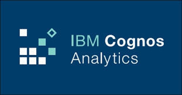

Designed a well-structured online food delivery data base and executed advanced SQL queries such as
Joins, Aggregate functions and Nested queries in MySQL workbench to have a better understanding of data management
Gained practical experience with data collection via APIs and web scraping,
data wrangling and EDA using Pandas, Matplotlib and Seaborn in Jupyter Notebooks, data visualisation
via dashboards in IBM Cognos, and presentation of findings in MS PowerPoint
Performed EDA on transaction data to identify patterns using Pandas and
Matplotlib, Implemented and trained multiple classification models logistic regression, support vector classifier and Decision tree (with 99% accuracy and precision score) using Scikit-learn to detect fraud
Performed Exploratory Data Analysis on house prices dataset to identify patterns using Pandas, Numpy,
Matplotlib and Seaborn, Implemented and trained Linear and Ridge regression model using Scikit-learn to predict house prices
Performed Exploratory Data Analysis on Mall Customer data (Kaggle) to identify
patterns using Pandas and Matplotlib, Implemented and trained unsupervised K-Means Clustering model using
Scikit-learn for Market Basket Analysis, used Elbow method to find accurate number of cluster
Performed Exploratory Data Analysis on transaction dataset (kaggle) to identify patterns using Pandas,
Matplotlib and Seaborn, Implemented and trained logistic regression machine learning algorithm using Scikit-learn to detect Credit card fruad, also handeled highly imbalance data
Performed Exploratory Data Analysis on transaction dataset (kaggle) to identify patterns using Pandas,
Matplotlib and Seaborn, Implemented and trained support vector machine learning algorithm using Scikit-learn to predict Loan Status

Using BeautifulSoup scraped the web for popular stocks including Tesla, Amazon, AMD, and
GameStop, Collected financial data such as historical share price and quarterly revenue reportings from numerous sources to further visualize it in a dashboard to identify trends
Using advanced capabilities of MS Excel such as Filters, Charts, Slicers, and
Timelines to perform data cleansing and data mining, Created dashboard to obtain insight into automotive sales
Using advanced capabilities of MS Excel such as Filters, Charts, Slicers, and
Timelines to perform data cleansing and data mining, Created dashboard to obtain insight into automotive sales
Created a dashboard using Plotly and Dash in Theia an open-source IDE, to monitor
flights performance of US domestic airline in order to enhance flight reliability and thereby customer reliability

Using IBM Cognos Analytics advanced capabilities, such as performing computations and leveraging navigation paths, to develop a basic dashboard to visualize data and gain additional insight into product sales.